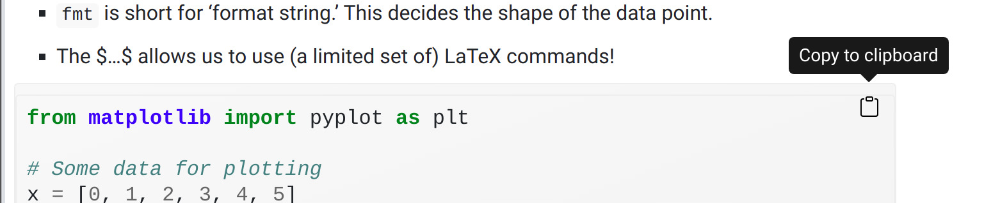

5 Instructions
5.1 General flow
The workshop material is composed of many Examples and Exercises.
-
Examples:
- Copy and paste (use the button) the code for the examples in your Colab.

Figure 5.1: Use the Copy to Clipboard button.
Run it and see if things work.
Try to make sense of the code.
-
Exercises:
- These are included to get you started on new features or new ways of using code.
- Please work through these together with your classmates and the facilitators.
5.2 If you have any difficulties
- Please speak (through Zoom) or use the chat (in Zoom) to raise questions and contribute to the discussion.
- We will not use the breakout rooms in Zoom because we like everyone to benefit from the discussions that take place.
- Remember that you can use Piazza to communicate with your whole class! (even after the workshop).
- Please use Piazza to post your questions/difficulties to the team.
- Please indicate the section related to your question in the question heading.
- E.g. Basic plotting: Plot does not show?
- If you are having trouble with some code, please copy and paste them in your question.
- If necessary you can also add a screenshot.
- Please indicate the section related to your question in the question heading.
- Please share code amongst yourselves too.